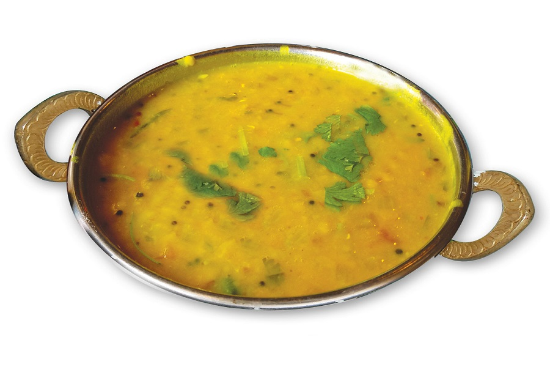

Daal

Ingredients
- 1 cup red split lentils
- 5 cups water
- salt
- Black pepper
- Coriander powder
- Red chilli powder
Steps
- Wash the lentils in cold water
- Bring 5 cups of water to the boil
- Add the spices, stir and add the daal to the water
- Place a lid on the saucepan and allow to simmer, stirring regularly
- Once the daal has thickened to your preference, remove from heat
- Serve with boiled rice or roti